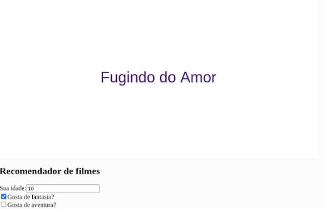
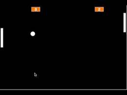

Meu Projetos

Projeto de recomendação de filme
Este projeto em p5.js é uma aplicação interativa simples e divertida que recomenda fimes...

Projeto de recomendação de filme
Pong é um jogo de dois jogadores, onde cada um controla uma paleta (ou raquete) que se move para cima e para baixo na lateral da tela...

Projeto de recomendação de filme
Este projeto cria uma bolinha que segue o movimento do mouse na tela. Quando o programa é iniciado, a tela é criada com fundo verde e a bolinha começa no centro da tela...